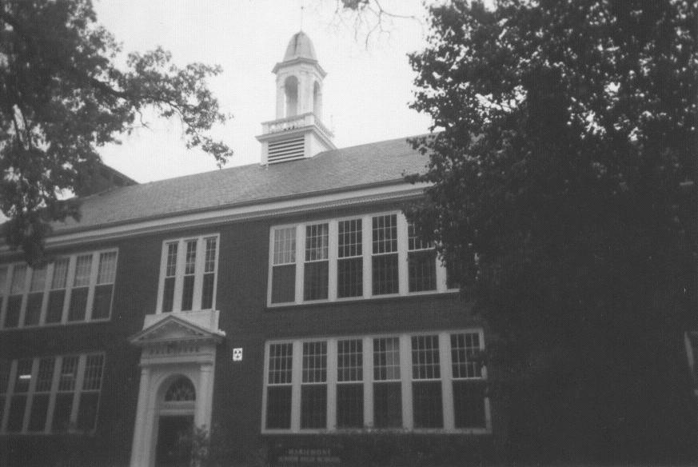
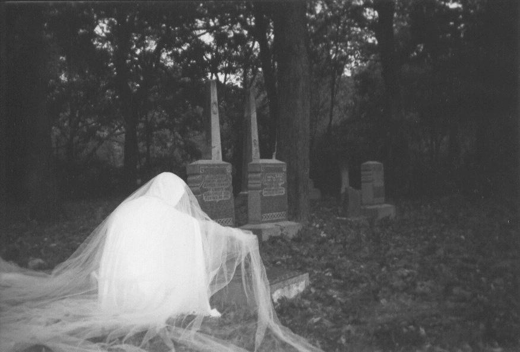

Dale Park Cemetery and Middle School

The Dale Park Cemetery is said to be haunted by a ghost named Sarah, who appears in white flowing robes and walks through the cemetery on certain nights. She has also been seen in the middle school next door, especially in the attic room.

Back